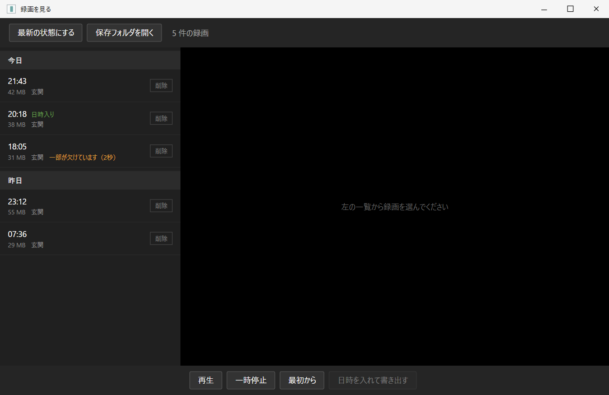

Manual 03公開準備中
録画を見る・残す
録画を日付から探して再生し、必要な場面を書き出す。保存容量と自動整理の仕組みまで説明します。
現行画面の配置・文言を再現した説明図アプリから撮影したスクリーンショットではありません録画・カメラ名は公開用データ
Recording browser
監視を止めずに、録画一覧を開く

- 最新の状態にする — 開いた後に増えた録画を一覧へ読み直します。
- 保存フォルダを開く — Windowsのエクスプローラーで録画の場所を開きます。
- 日付別の一覧 — 新しい日、新しい時刻の順に表示します。複数カメラでは名前も出ます。
- 再生領域 — 一覧で選んだ録画を、その場で再生します。
- 日時を入れて書き出す — 元を残したまま、提出用の別ファイルを作ります。
Recording state
一覧の印は「どこまで使える録画か」を示す
| 表示 | 意味 | 扱い |
|---|---|---|
| 印なし | 通常どおり完成した録画です。 | 再生、書き出し、コピーができます。 |
| 録画中です | 現在ファイルへ書き込んでいます。 | 終了するまで再生できません。 |
| 一部が欠けています | 通信の空白などを記録しています。 | 再生できますが、欠けた間は前の場面が止まって見える場合があります。 |
| 再生できません | 映像を取り出せない録画です。 | 必要なら同名JSONと一緒に問い合わせます。 |
| 日時入り | アプリで日時を入れて書き出した別ファイルです。 | 元の録画とは別に残ります。 |
見張り番は、欠けた録画を完全な録画に見せかけません。使える範囲を明示し、元の記録を残します。
Playback
録画を選んで再生する
- 左の一覧から、見たい日付と時刻の録画を選びます。
- 右側で再生が始まります。再生、一時停止、最初から、音量を操作できます。
- 映像が開かない場合は一覧の表示と警告を確認します。別の正常な録画を選ぶと、前の警告は消えます。
Export
必要な録画だけ、日時入りの別ファイルにする
- 録画を1本選び、「日時を入れて書き出す」を押します。
- 確認画面で対象日時、元の録画が残ること、出力名を確認します。
- 同じフォルダに、元の名前へ「_日時入り」を付けたMP4を作ります。
- 元の録画は変更しません。
- カメラ側ですでに日時を表示している場合は、日時が二重になります。
- 音声のある録画を書き出した場合、書き出し側にも音声を残します。
- 撮影日時を判断できないファイルは、誤った日時を付けず中止します。
Delete safely
削除は対象日時を確認して、ごみ箱へ
一覧の「削除」を押すと、対象の年月日と時刻を確認してからWindowsのごみ箱へ移します。 その場で完全削除はしません。戻す場合は、MP4と同名のJSONを一緒に戻してください。
Files
MP4と同名JSONは1組
MP4の隣にある同名のJSONは、映像が欠けた時間や録画の状態を残す小さな付随ファイルです。 録画を別の場所へ移す、ごみ箱から戻す、問い合わせへ添える場合は2つを一緒に扱います。
- 録画ファイル名と日付フォルダ名は変えないでください。撮影日時が分からなくなり、日時入り書き出しができなくなる場合があります。
- 保存先を変えても、過去の録画は自動では移りません。移動する場合は見張り番を閉じ、日付フォルダごと移します。
- 消えて困る録画は、自動整理の対象外となる別のフォルダや外付け媒体へ早めにコピーしてください。
Retention
古い録画は3つの条件で自動整理
初期設定では、次のうち最初に当たった条件で古い録画から削除します。
30日保存期間を過ぎた録画
100GB録画の合計が上限を超えた分
空き10GB保存ドライブの空きが下限を下回った場合
古い順新しい録画を残し、古い録画から整理
Capacity guide
保存容量の実測目安
| 周囲の動き | 録画時間/日 | 容量/日 | 30日の目安 |
|---|---|---|---|
| 静かな日 | 約15分 | 約130MB | 約4GB |
| 人通りあり | 約1時間 | 約550MB | 約16GB |
| 動きが多い日 | 約2時間20分 | 約1.4GB | 約42GB |
同じ場所でも日によって約9倍の差が出ました。カメラを増やすと合計上限へ早く達します。